Ćwiczenia krok po kroku
Technika klasa 6
Temat: Zabawka elektryczna
Przygotuj:
1. Pudełko po butach
2. 10 śróbek M4 i 10 nakrętek
3. 5 kabelków ok. 20 cm i 2 kabelki 30 cm
4. żarówkę 3 V + oprawkę lub światełko choinkowe ze starej popsutej ozdoby
5. 2 kołki rozporowe
6. taśmę izolacyjną lub zwykłą
7. nożyk
8. nożyczki
9. klej
10. wkrętak krzyżak
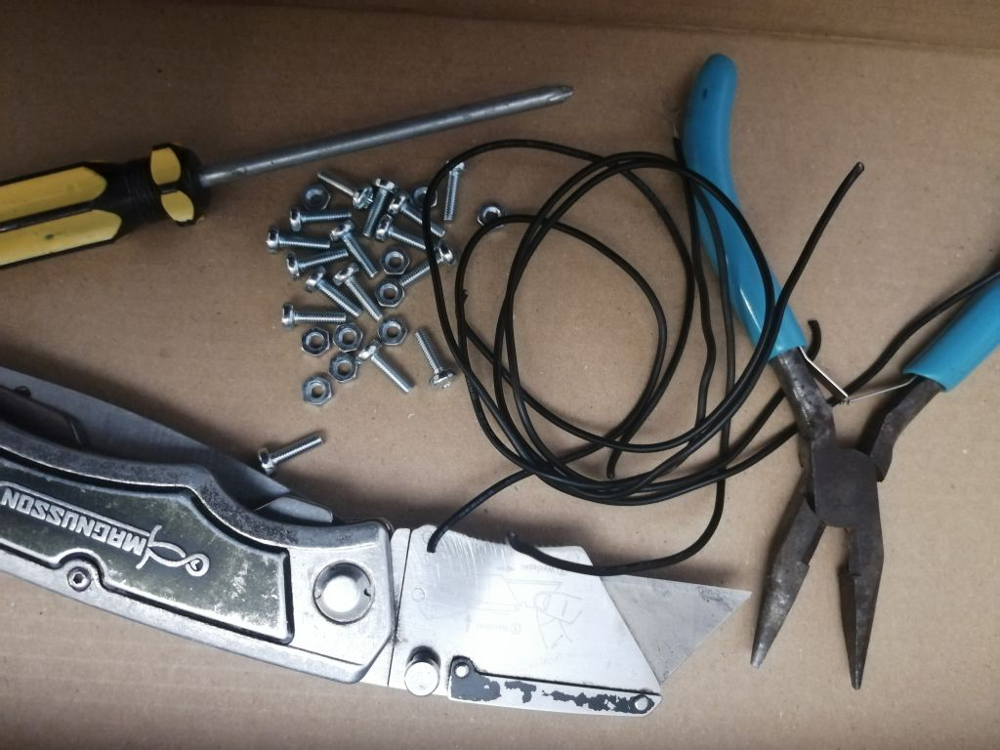
Naklej na wieczko pudełka kartkę z symbolami i nazwami elementów elektronicznych
W kółeczkach wkrętakiem, lub gwoździem zrób otwory pod śróbki
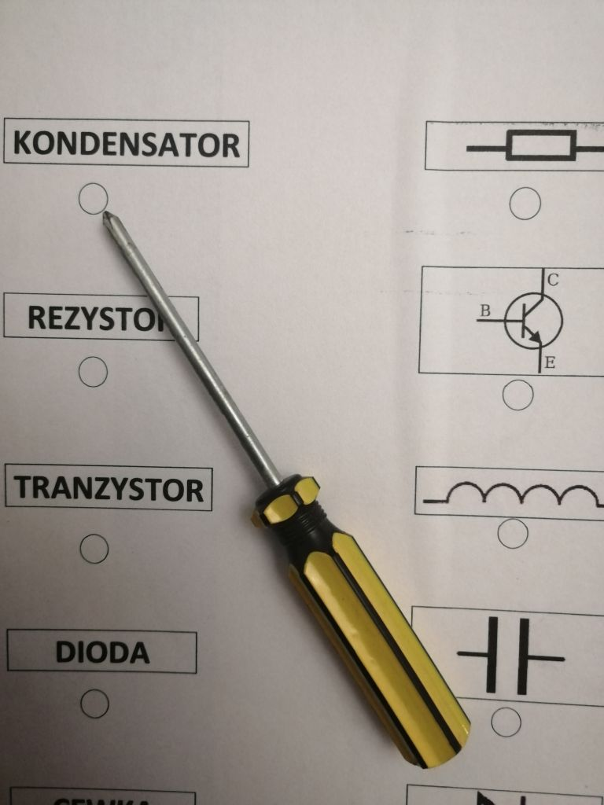
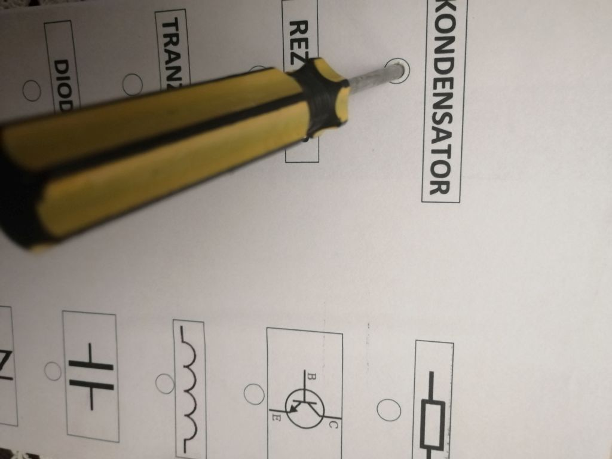
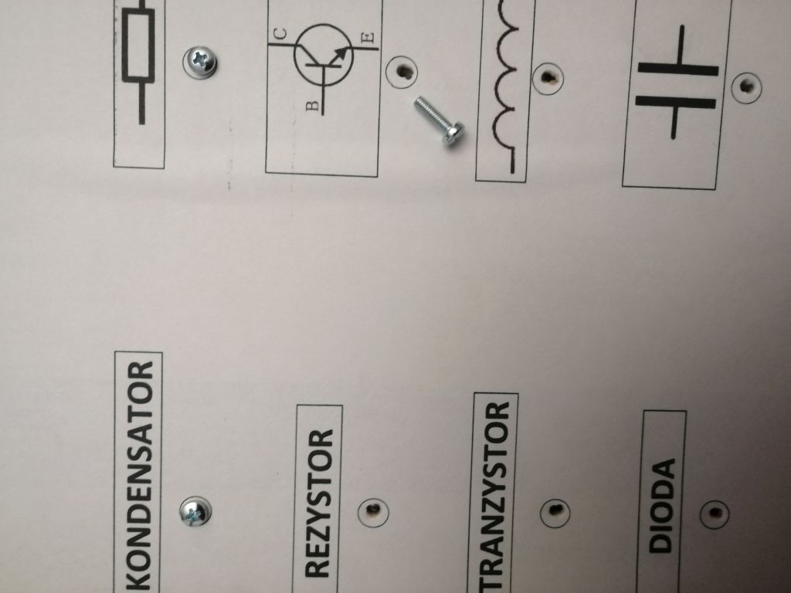
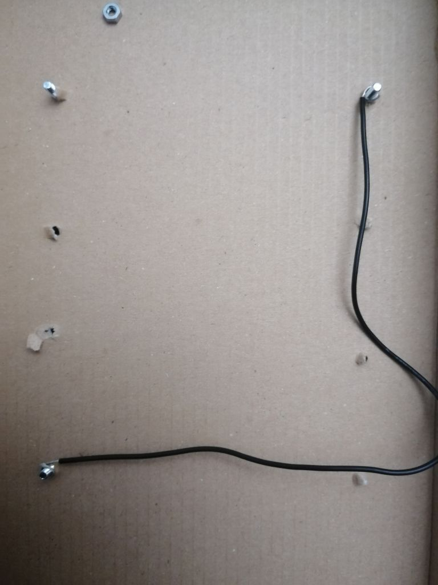
Odizoluj końcówki kabelków na ok. 2,5 cm i nawiń na śróbki.
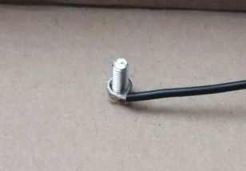
Następnie nakręć nakrętki
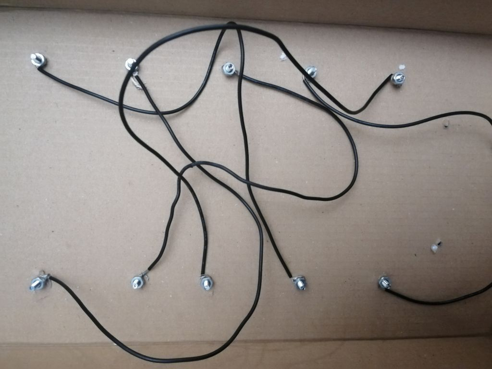
Moje wszystkie żarówki i oprawki są w klasie, ale mam stare niedziałające lapki choinkowe i jedną sobie wymontowałem
Wykonałem dwa otworki w dużym kółku na planszy
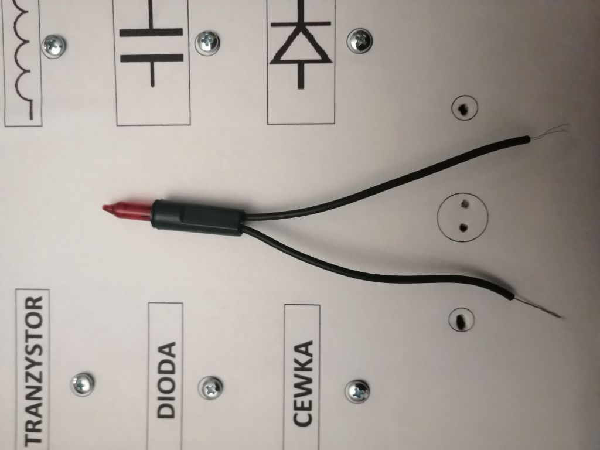
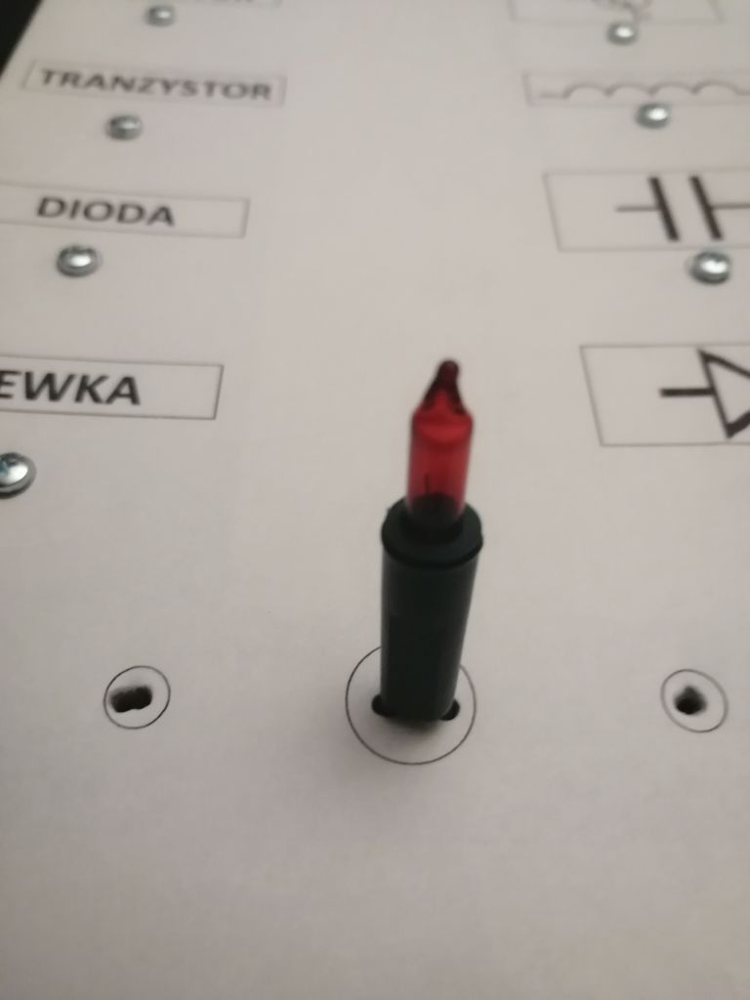
W mniejszych kółkach też wykonałem otwory i przewlekłem przez nie kabelki z manipulatorów, które Wam opisywałem na lekcji 28.04
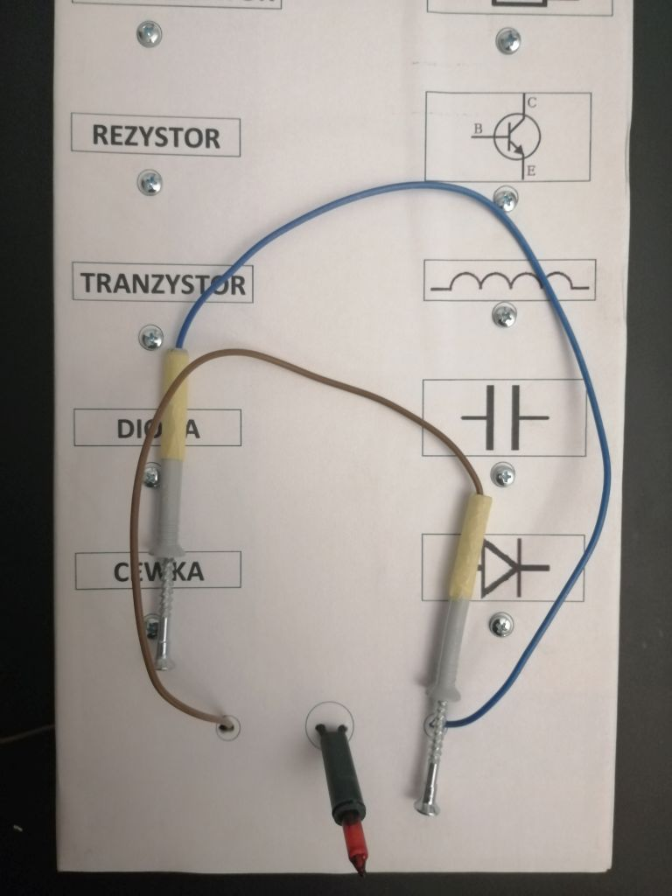
Jeden kabelek z lamki należy przedłużyć i połaczyć z płaską baterią 4,5V (miejsce skręcenia kabelków trzeba zaizolować)
Drugi kabelek z lamki łączymy z kabelkiem od manipulatora, skręcamy i izolujemy.
Kabelek z drugiego manipulatora podłączamy do drugiego bieguna baterii
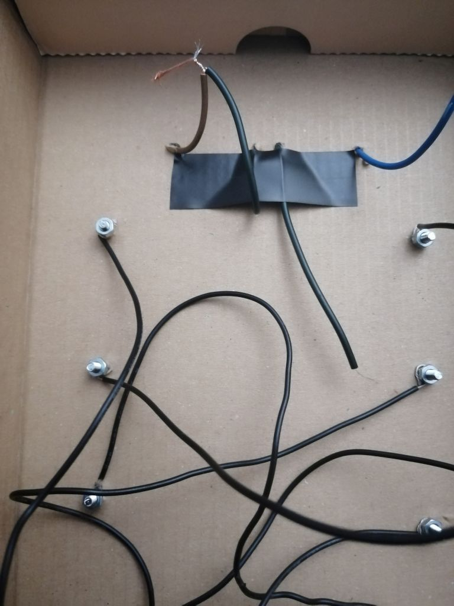
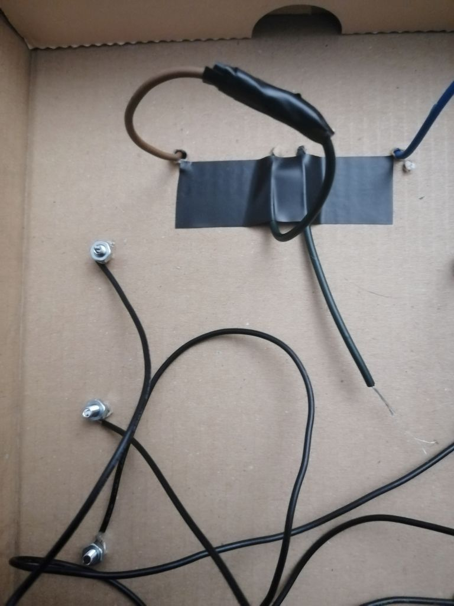
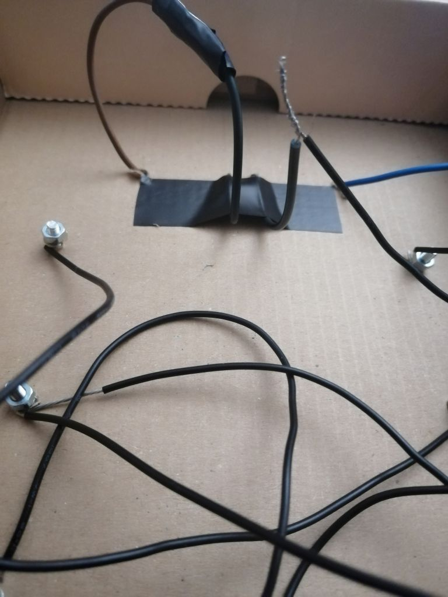
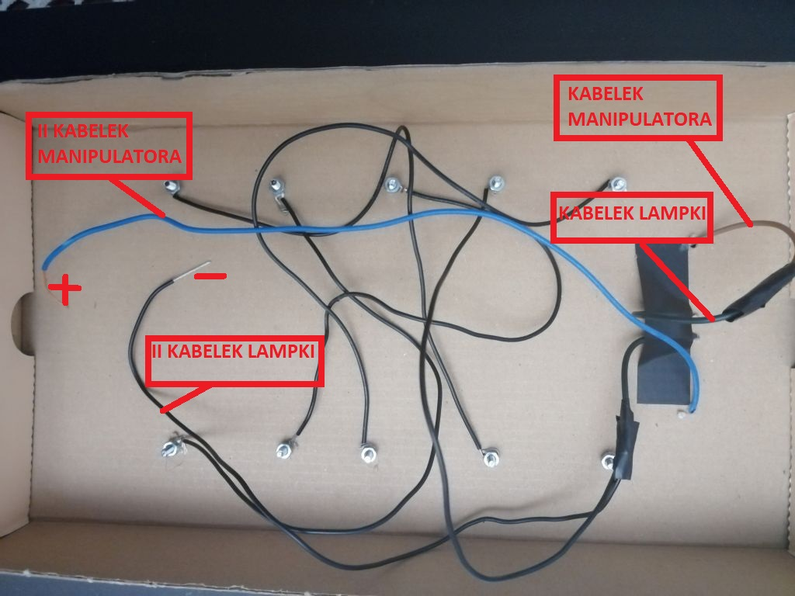
I gotowe. Jak widzicie nie mam jeszcze baterii. Ale sprawdziłem uklad na akumulatorze z aparatu i działa!
Jeżeli nie macie śróbek możecie użyć wkrętów do drewna, pinezek i korka, może macie starą, popsutą latarkę, lampkę rowerową
Jeżeli czegoś Wam zabraknie, np żarówki, to i tak przyślijcie zdjęcie pracy, nie obniży to oceny.
Liczę na Waszą pomysłowość. Czas realizacji do czerwca.
Paniętajcie, że korzystamy tylko z baterii 4,5V. Nie bawcie sie innymi źródłami prądu!!!